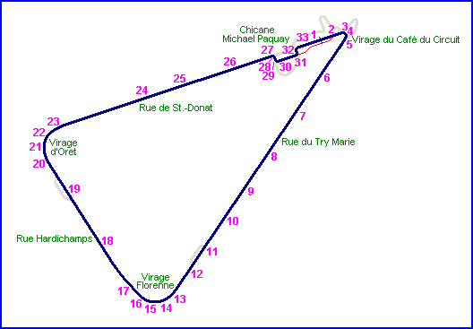
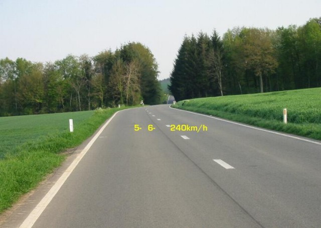
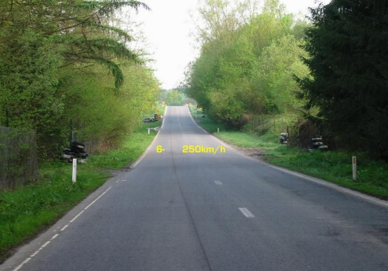
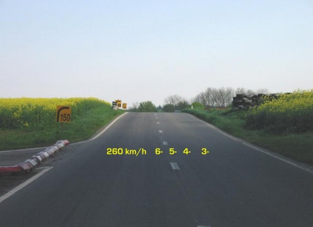
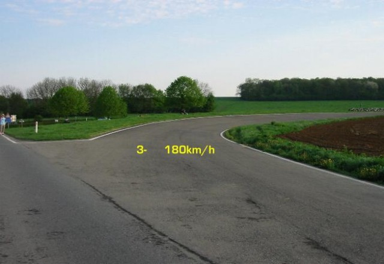
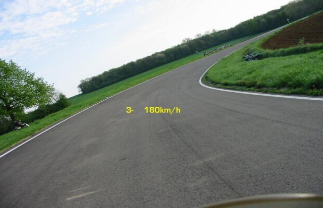
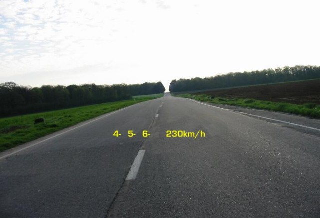
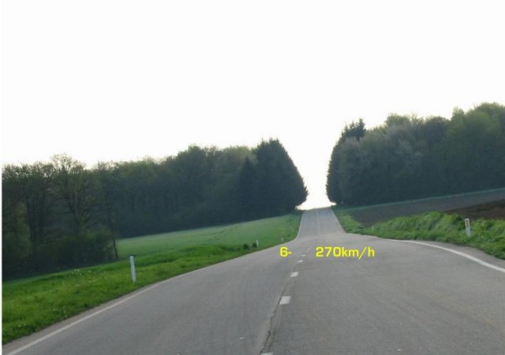
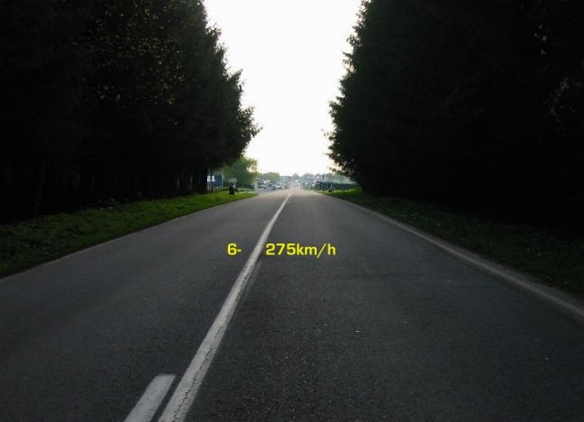

22 - Virage d'Oret
|| Contents || Start & Virage du Café | Try Marie & Florenne | Hardichamps, Oret & St.-Donat | Chicane Michael Paquay || Home ||

Numbers on the map represent the location where the photographs were taken. Click
hyperlinks above to view the photographs.

17 - Rue Hardichamps

18 - Rue Hardichamps

19 - Rue Hardichamps, alongside the second
chicane to the left

20 - Entering Virage d'Oret

21 - Virage d'Oret
22 - Virage d'Oret

23 - Onto Rue de St.-Donat

24 - Rue de St.-Donat

25 - Rue de St.-Donat, over the crest
Return to racingcircuits.net's Photo Archive Main Index
©2005 Philippe Lardinois, Webmaster: superbiker.com. Reproduced here with kind permission. Lap by Sebastien Le Grelle (Honda Supersport 600)